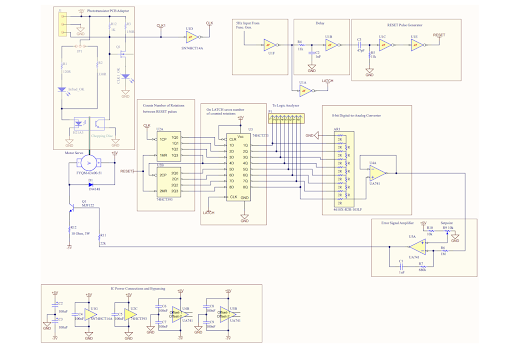

Project Overview
I built a closed-loop motor control system that senses motor RPM using a phototransistor-LED pair, converts the signal into an analog voltage, and uses an error signal amplifier to regulate the current flow to the motor until it matches the voltage of the potentiometer.

Circuit Schematic

Final Breadboard Implementation
How It Works: Pure Hardware Control
This circuit controls the motor's speed using purely hardware—no software is involved. Here is the step-by-step breakdown of the control loop:
- Signal Conditioning: As the motor spins, an optical encoder generates a sinusoidal wave counting the rotations. The encoder output is routed through a specifically set comparator for signal conditioning, transforming the wave into a digital square wave.
- Counting & Latching: The square wave increments a 256-bit counter. Separately, a 5Hz wave generates a LATCH pulse and a 10µs RESET pulse. These pulses latch the current count into the D-Latch and then immediately reset the counter.
- Digital-to-Analog Conversion: The value stored in the Latch at any given time is converted into an analog signal by a resistor DAC (Digital-to-Analog Converter).
- PI Control & Regulation: The analog signal is routed through a buffer op-amp and an integrating op-amp to measure the error between the actual motor speed and the target speed set by the potentiometer. This PI control network accumulates error over time, causing a fluctuating current through the BJT that physically regulates the motor speed.
Key Skills & Takeaways
- Analog circuit design, including differential amplifiers, error signal amplifiers, comparators, and transistor-based motor drivers.
- Signal conditioning techniques involving a comparator and Schmidt trigger inverter to convert the sinusoidal sensor input into a square wave response.
- Practical electronics skills, such as breadboarding, troubleshooting with an oscilloscope, and using digital buses for counting.